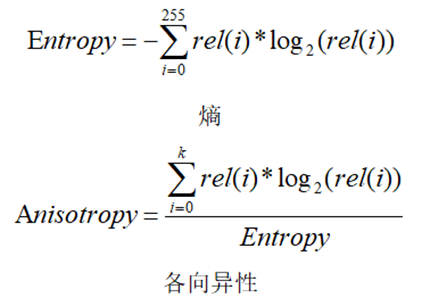

|
类型 |
特征 |
|
描述 |
计算图像的熵和各向异性  其中i是灰度图像灰度级别，取值0-255；rel(i)是相对直方图，是灰度为i的像素占图像像素总数的比例；k是rel(i)从灰度0开始累加到满足大于等于0.5的最小灰度值 |
|
语法 |
ZV_ImgEntropy(img,re,tabId)
参数： img：ZVOBJECT类型，单通道8U图像 re：ZVOBJECT类型，计算区域，保留逗号不填或填入未使用过的变量则全图运算 tabId：TABLE索引，输出参数，依次为计算的图像熵和各向异性 |
|
适用控制器 |
支持ZV功能或者5系列以上的控制器 |
|
例子 |
ZVOBJECT img ZV_ImgRead(img,"0.bmp",0) '读取图片 ZV_ImgEntropy(img,,0) '全图计算，结果位于TABLE(0)和TABLE(1)中 ?TABLE(0),TABLE(1) |